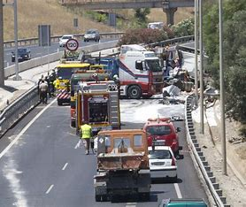

ACCIDENTES DE TRAFICO
MY WEB
Cuando hablamos de accidente de tránsito nos referimos a un tipo de accidente relacionado con la circulación vial de vehículos a motor. Es un accidente que se produce en el manejo
y conducción de un coche, moto, camión, furgoneta o cualquier otro, durante el tránsito de un lugar a otro, en una vía pública o privada, en el que pueden estar involucrados vehículos, peatones y animales.
